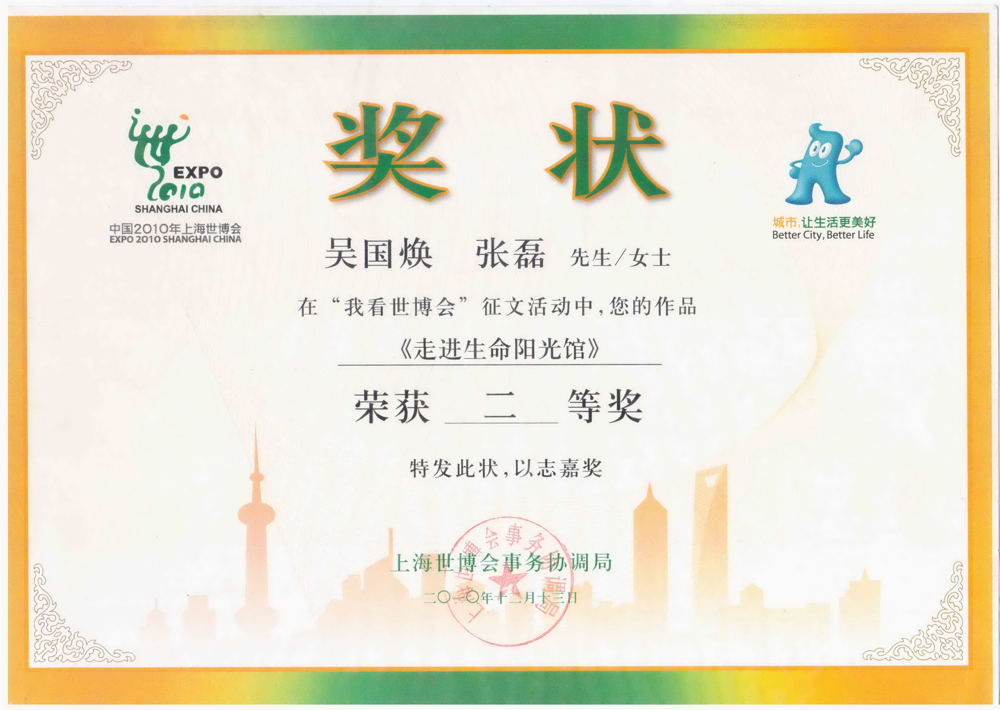
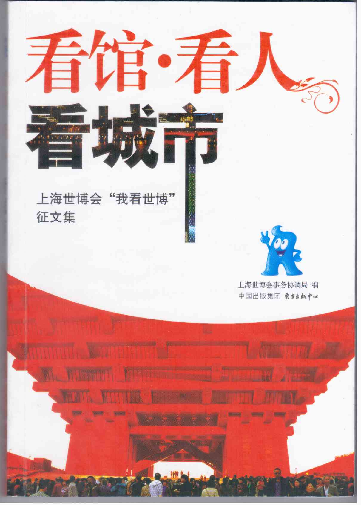

上海世博会，在人们的恋恋不舍中落下了帷幕。回顾世博，既有赞美和惊叹，也有温馨与感动，更有品味与思考。
“生命阳光馆”正是上海世博会中一颗璀璨的明珠。它给我的世博之旅留下了深深的印象。
我们这一代人，从小太多的排队经历：买菜啦、购物啦 ……早已使我们对排队心生害怕。所以，我和妻子打定主意，领略世博风光，尽量不排队或少排队。
那天，我俩从西藏南路二号门入园，一路信步走来，随缘而至，专挑游人较少的去处，倒也参观了好几个场馆。心态平和，各有所获。
边走边看，时至中午，一个灿烂的名字“生命阳光馆”吸引了我们。
走进序厅，一股清新雅致的气息扑面而来，一蓬蓬悬挂在空中的七彩花球，构成了一个巨大的空中花园，花球上无数小野花尽情绽放，象征了生命的美好。
耳边传来了美妙的钢琴曲。一位少女，一袭连衣白裙，正在熟练的演奏。哟，她是位盲人呀!脸上却凝聚着恬静和自信。
继续朝前走，“天视奇观”盲人生活体验区引起了我俩的关注。一打听，离下午开放时间还有15分钟，我俩居然排在了第一。实在是难得。
如果眼睛看不见，那将是怎样的世界？盲人朋友们每天在黑暗中，过的是怎样的日子啊？我们想象着，等待着，一刻钟很快过去。
一位盲人志愿者头戴耳麦、身背小巧的扩音设备，准时出现在体验区前。他身材魁梧，声音洪亮，向我们简要介绍了体验区内的大致情况和体验时的注意事项。要不是他带着一副宽大的墨镜，一点也看不出他与健全的小伙有什么两样。
在这位盲人志愿者的引领下，我们走进了体验区。室内漆黑一片，尽管睁大眼睛，仍然什么也看不见。我们一行按照要求，左手扶墙，右手搭在前面观众的肩膀上缓缓前行，小心翼翼。
黑暗中，传来了志愿者的声音：“左边的墙壁上是一幅浮雕长卷，雕刻了从黄浦江源头到吴淞口的标志性景观。” 我用心地用手摸着，除了粗糙的石壁，凹凸不平，哪有什么美景。
再往前走，是“模拟海港”，“习习海风”吹到脸上，脚下像踩上了船的甲板，左右摇晃起来，大家不由自主地抓紧了粗大的“缆绳”……场景设计得十分逼真，可谓别具匠心。但是，如果没有志愿者的解说，实在也很难把它与“繁华的海港”联系起来。
“好，现在，我们来到了一个公园，公园里有竹林、有鲜花。”哎！ 果真有一阵花香飘过来，耳边也响起了小鸟的鸣叫。还能摸到一些植物，依稀能辨别出是竹叶和树干。但是，这能算美丽的公园么？
短短的几分钟“全黑”的情景，足以让人体验到失去视觉的无助与恐怖。
看不见大自然的万紫千红；看不见亲朋好友的微笑脸庞；看不见世界发展的日新月异 ……没有光明的感觉真是太可怕了。而盲人们正是成年累月生活在这样的黑暗之中啊！
“天视奇观”的最后，我们在黑暗中，观看了一场特殊的足球比赛。盲人队员是凭借着足球上绑着的铃铛发出的响声和相互间的召唤，来调整自己的站位、判别来球的方向，他们盘球带球，精准射门，在黑暗中创造了奇迹。
走出了生命阳光馆，那弹钢琴的白衣少女、那在黑暗中引领我们的魁梧小伙、那勇敢拼抢、球技娴熟的足球男孩，一个个顽强拼搏的形象不断的浮现在我们的眼前。
眼前，还不断地涌现出一个又一个词汇：“困难”、“艰辛”、“顽强”、“抗争”、“命运”、“珍惜”、“关爱生命”、“共享阳光” ……促使我们不断地思考。
虽然这次世博游，没能看到更多的文化奇观、异域风情和高新科技，但我们却受到了更多更深的启示 ：
什么才是真正的困难？
你所遇到的困难能与残疾人时时要面对的困难相比么？
我们每个人能为残疾人做些什么？
作为一个感官健全的人，是否真正感知到世界的美好、生命的宝贵？从而真正珍惜生命、活出精彩来？……
注：本文在2011.1上海世博会事务协调局举办的《我看世博会》征文活动中获得二等奖。并由中国出版集团东方出版中心结集出版，收录于《看馆看人看城市》一书
(本文刊登在2011年2月《杨浦区教师进修学院院报》)

